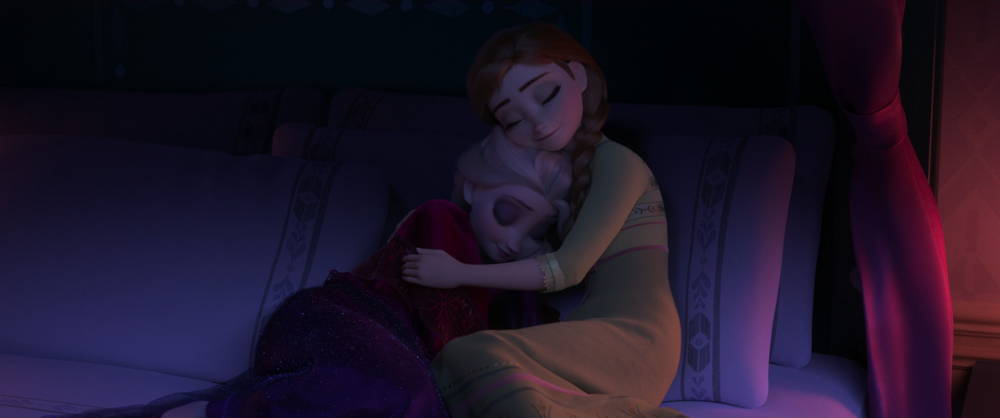

恐惧 · 艾莎的牢笼
📖 这一页讲什么
「恐惧」是缠绕艾莎一生的主题。这一页讲：恐惧如何被「conceal」喂养成牢笼，以及它怎样从内部困住一个本该强大的女孩。地精首领 Pabbie 的警告「Fear will be your enemy」（恐惧将是你的敌人）是全系列最核心的命题之一——魔法本身从不可怕，可怕的是「不敢做自己」的那十几年。


🌱 恐惧的起源：一次意外与一句口诀
艾莎的恐惧不是凭空的——它来自一次意外、一句「Conceal it. Don't feel it. Don't let it show.」、和十几年里每一次「再靠近就会伤人」的自我暗示。这句口诀诞生于童年意外之后——艾莎无意间误伤安娜，国王为「保护」女儿而给她戴上手套、命令她隐藏。从此「隐藏」不再是权宜之计，而是一种被制度化的生存方式：高墙、紧闭的城门、空荡的宫殿西翼，都成为这句口诀的物理延伸。
"Conceal it. Don't feel it. Don't let it show."
—— 国王授手套口诀 · 《Frozen Junior Novel》/《电影1艺术设定集》p.009
🔒 恐惧的牢笼：从外部禁令到内部审判
恐惧在她心里筑起牢笼，而钥匙她一直攥在自己手里，却不敢用。她不是反派，只是「做了坏选择的困境者」——这句话点破了恐惧主题的核心悖论：艾莎所对抗的从来不是外界的敌人，而是被恐惧包裹的自我。当她戴上手套、微笑着说「Goodbye」关上宫门，镜头里的孤独不是邪恶，而是一个无法确认「我是谁」的少女的身份焦虑。她害怕的并非力量本身，而是力量一旦显露便会伤害所爱之人，于是「藏」成了唯一被允许的答案。
👹 「怪物」这个词的重量
加冕日，韦斯特顿公爵喊出「怪物」。这句骂名之所以致命，是因为它说中了艾莎最深的自我认知——她早已在心里把自己当成异类。外界的标签，只是印证了内心的判决。「怪物」这个词之所以有力量，不是因为它描述了真相，而是因为它描述了艾莎最深的恐惧——「我就是怪物」。当一个人已经在心里给自己定了罪，外界的任何一句骂名都只是确认而已。
📈 恐惧的滋长：与力量成正比
地精的警告「Fear will be your enemy」有一个残酷的推论：恐惧越大，力量越失控；力量越失控，恐惧越大。这是一个恶性循环——艾莎越怕自己的魔法，魔法就越容易失控；魔法越失控，她就越怕。F2 中艾莎唱到「Every day's a little harder as I feel my power grow」（每一天都更难一些，因为我感到自己的力量在增长），正是这个循环的延续——力量增长本应是好事，但在恐惧的框架下，它成了更大的负担。
🪞 破解恐惧：不是消灭，是面对
电影给出的解药不是「战胜恐惧」，而是「不再躲」。当艾莎终于允许自己被看见、被爱，恐惧就失去了喂养它的孤独。《危险秘密》更进一步批判「conceal, don't feel」的代价，主张「恐惧才是唯一的敌人」，把父亲的口诀从育儿箴言还原为一句需要被推翻的错误指令。恐惧的牢笼，从来都是她自己锁上的，也能由她自己打开。真正的转折不是「我不怕了」，而是「我怕着，但我往前走」。
💫 恐惧主题的普遍意义
艾莎的恐惧之所以能引发如此广泛的共鸣，是因为它超越了「会魔法的公主」的特定语境。每一个曾因「与众不同」而隐藏自己的人——无论是性取向、性格、能力还是身份——都能在艾莎的「conceal」中看到自己。这也是为什么《Let It Go》被边缘群体广泛解读为「出柜」之歌——恐惧的本质是相同的：怕被拒绝、怕被伤害、怕自己不够好。而艾莎的故事给出的答案也是普世的：恐惧不会消失，但你可以不再让它替你做决定。

